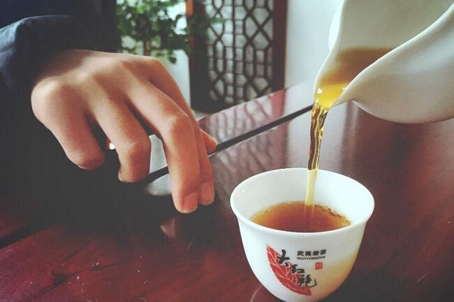
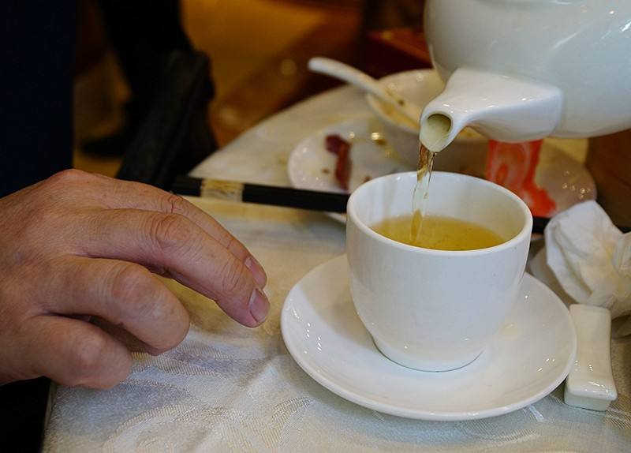

叩手礼是广东人饮茶的礼仪。
主人给客人斟茶时，客人要用食指和中指轻叩桌面，以致谢意，这就是广州人饮茶的“叩手礼
以“手”代“首”，最新二者同音，这样，“叩首”为“叩手”所代，三个指头弯曲即表示“三跪”，指头轻叩九下，表示“九叩首”。至今还有不少地方和港澳地区行此礼，每当主人请糖倒茶之际，客人即以叩手礼表示感谢。
据说是乾隆微服南巡时，到一家茶楼喝茶，当地知府不小心知道了这一情况，拼了老命也得去护驾，否则万一出事，小心吃饭家伙。知府也微服一番，以防天威不测。到了茶楼，也就在皇帝对面末座的位上坐下，皇帝心知肚明，也不去揭穿，久闻大名、相见恨晚的装模作样一番。皇帝是主，免不得提起茶壶给这位知府倒茶，知府惶诚惶恐的，但也不好当即跪在地上来个谢主隆恩，于是灵机一动，弯起食指，中指和无名指，在桌面上轻叩三下，权代行了三跪九叩的大礼。敬茶喝茶是人之常情，又咋知你是微服皇帝，反正你敬我茶，我叩这么几下，也不花多少功夫，省得后患无穷。于是这一习俗就这么流传下来。为了简便，也用食指单指叩几下。
用手指笃桌子表示谢意的“来历” 据说，乾隆皇帝游江南，来到淞江，带了两个太监，便衣打扮，到一爿茶馆店里去私巡察访。茶店老板拎了一只长嘴茶吊来冲茶，端起茶杯，沓啦啦、沓啦啦、沓啦啦一连三洒，茶杯里正好浅浅一杯，茶杯外没有滴水溅出。乾隆皇帝看在眼里，喜在心里，忙问：“掌柜的，你倒茶为啥不多洒一洒，少洒一洒，不多不少齐巧洒三下？”老板笑着回答：“客官，这是我们茶馆的行规，这叫凤凰三点头。”乾隆皇帝一听，夺过老板的水吊，端起一只茶杯，也要来学学这“凤凰三点头”的新鲜玩艺。这只杯子是倒给太监的，皇帝向太监倒茶，这不是反礼了，在皇宫里太监要跪下来三呼万岁、万岁、万万岁。可是在这三教九流罗杂的茶馆酒肆，暴露了身份，这是性命交关的事啊！当太监的当然不是笨人，急中生智，忙用手指笃笃桌子表示以手来代替叩头。这样“以手代叩”的动作一直流传至今，表示对亲朋好友敬茶的谢意。